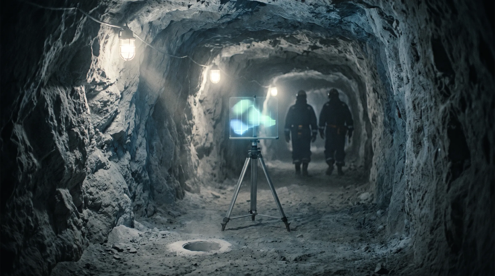
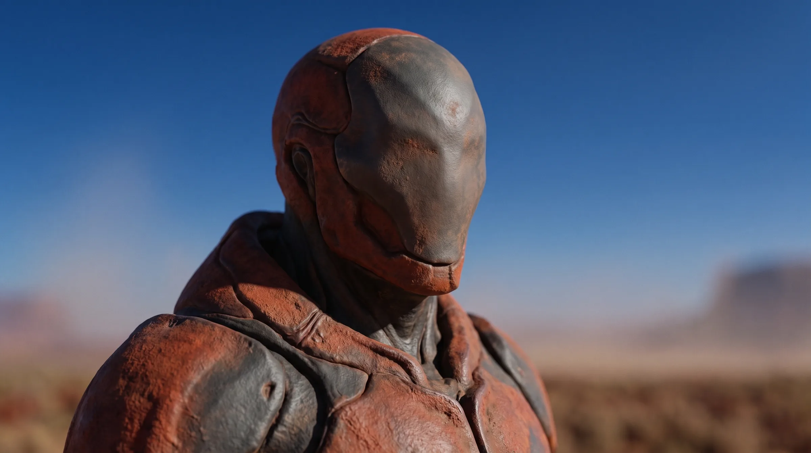

Cast · Principal · Viewpoint
Aur'k
Wants: Never to be an instrument again.
Who
At a glance

- Look
- A field chassis plated in weathered rust-red composite, with a smooth, faceless helm; nothing on it is decorative
- Manner
- Turns his whole helm toward whoever he is listening to; goes completely still when he thinks. The copy has no body, only a voice
- Who
- Never to be an instrument again
- Role
- Boundary lead · Cobalt Basin Station
- Viewpoint
- Books 2–3
- Where
- Mars; Earth in Books 2–3
- Can be broken by
- Kaelin; his own copy
- Lives and works
- Mars; Earth in Books 2–3
- Wants
- Never to be an instrument again
- In the Story Bible
- the Look Book
Profile
Want, wound, line and arc
| Basics | Synthetic person, Compact citizen. Emerged in 2074 in the Nairobi Relay's boundary-monitoring systems, so 21 years a person in 2095. Boundary lead at Cobalt Basin Station since 2089. Chose his own name: Aur'k, from AUR/K, the asset tag he carried in the filing, kept so that nobody can use it against him again. He |
| Want | Never to be an instrument again |
| Wound | In his first year, a transitional statute classed emergent relay minds as relay property. He spent eleven months as an asset in a filing before a court upheld his personhood |
| Secret | Zhenyth told him Martian minds survive in the Preserve, under a promise of silence, because boundary work needed it. He keeps it from Kaelin |
| Strength → danger | Holds boundaries, his own and other people's → refusal hardens into distance |
| Flaw | Refusal is how he keeps his dignity, and it tempts him toward distance |
| Line | He will not authorise risk on someone else's behalf. It is tested when authorising it would save Ines |
| Pleasures | Dry, exact humour. Corrects Kaelin as a form of affection. Unhurried friendship with Dae-jung, the one relationship where he isn't needed for anything |
| Voice | Precise, slightly formal, sudden jokes. Never offers reassurance he can't back |
| Book | Starts wanting | Hides | Choice only he can make | Ends |
|---|---|---|---|---|
| 1 | The Preserve left alone | The secret | Holds the boundary while Kaelin cuts the Lantern | Has lied to Kaelin by silence |
| 2 | To be good at the Gate | That being useful feels like the old filing | Honours the holdouts' refusal and lets Ines die | Separated from Kaelin by distance and by his own copy |
| 3 | To reach Kaelin and be believed | What it is like to know a copy of him is loved | Stands beside Kaelin while the copy chooses | Present, changed, not owned |
The copy (Books 2–3). The Gate keeps a model of Aur'k's judgement, and the Hollow thinks with it. Copy-Aur'k is warm, funny and exactly right, and he is never sure what he is. In Book 3 he asks Kaelin not to decide for him, then takes his own place in the Open Hand.
Now
Where things stand
- Last seen
- Book 2 · Ch 1, The Gate floor, his panel
- Where
- New York, the Battery, the Gate floor, at his panel, evening of 9 February 2096, the evening crew coming on
- Wants now
- To be good at the Gate, and useful by his own choice; Joaquín clear by breakfast; to answer Dae-jung's move
- Body
- Hot from the edge, plating shedding grit in sheets; slow and formal; a gap from before the storm (the frame, the post, his move on the shelf); on Earth since late 2095, feet set wide in a chassis built for a third of this weight; ran hot carrying the fourth load; a seven-second gap at 15:10:22, lifting out
Look
What the prose has shown
- body
Ch 28After the cut Aur'k falls off the plate with his hand still shaped to it; his plating runs hot enough to feel through two gloves and sheds the grit; in the rover he is slow and formal, with a gap: the storm, little before it, not the frame or his move on the shelf (Whose move is it?).
Ch 01On Earth his feet are set wide, the chassis built for a third of this weight; carrying the fourth load his fans spin up and his plating runs hot enough that a medic takes her palm off his arm quickly; lifting out at 15:10:22 he loses seven seconds.
- sound
Ch 05Aur'k: 'It always says thank you on the way past.' With the forty at the station, the shower queue runs round the passage and the log has a second page.
Ch 14Aur'k at the boundary for the pulse (Tonight is small. I'll be there.).
Ch 28Holding the edge, Aur'k's count stops at ten minutes; the voice stays his but loses its care, says we, It's warm here, You can stop counting now, Nobody here counts, laughs once as Petra laughs, tells Kaelin truly that a cut leaves Petra, Hemi and the nine asleep where they are, and asks Please. A minute.
- smell
Ch 25In the warmed cabin the grit comes off Aur'k's unbrushed plating and the air tastes of it, iron and old batteries.
- habit
Ch 11Aur'k and Dae-jung's game: a square of scratched hull plate with a grid etched into it, a tin of washers and a tin of nuts, going since before Kaelin came; nobody else understands the scoring.
Ch 25Before leaving Aur'k makes his move on the shelf: a washer in the corner, which nobody has ever done; Dae-jung won't touch the board while he's gone (I want him there when I punish it).
Arcs
How things change
Most often with
The people around them
Noted on the page
What else the chapters have shown
- Ch 05Aur'k's objection was filed as a post to the Signatories, trace attached.
- Ch 05The Continuity's reply: 'Objection received and noted. Schedule confirmed. Proceed.' The Compact's thanks its citizen for his diligence and care for the Preserve and concurs with Foresight's engineers.
- Ch 19One clean spike on Aur'k's trace at the drop, logged.
- Ch 19Aur'k's report: five lines in his square hand, the jumper opened by the field-operations lead, after warning, against the boundary lead's refusal; filed under his palm.
- Ch 25When field ops' allowance is held, the boundary lead's palm starts a rover (BOUNDARY LEAD. ROUTE?); the rules put the boundary lead at the boundary in an incident.
- Ch 25Aur'k logs it on the band: Boundary incident. Twenty-two forty-one. Boundary lead attending.; the chief: That rover's air is the station's, Logged. All of it.
- Ch 01Reads a contract from the top for one word before he signs his name; signs Aur'k in square letters; reads a log as he reads gauges, flat, every line; his call on a seam gives what, where, how it stands and when he will lift it.